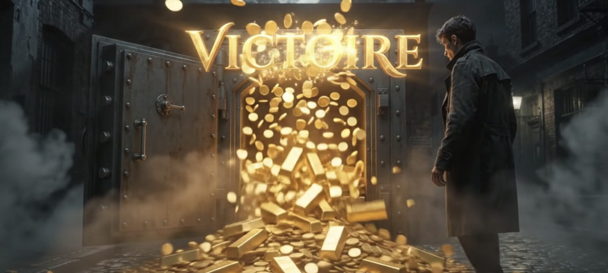

انغماس بصري في لعبة التاروت لدينا
استكشف مشاهد هذه اللعبة القوطية المجانية للتاروت قبل الاطلاع على قواعد اللعبة.
هذه اللقطات مأخوذة من تطبيق التاروت القوطي 2026 لنظام Android على الهاتف الذكي والجهاز اللوحي. وهي تعرض العالم البصري للعبة، ومباراة حقيقية بخمسة لاعبين، وشاشة بطولة نهاية الأسبوع.
وتُظهر لقطتان إضافيتان لمّة جارية وآلة القمار التي تراهن فيها برموزك. تتبع الأوراق التاروت الفرنسي التقليدي ذا الـ78 ورقة: 21 ورقة أتو، والـExcuse، وأربعة ألوان في كل منها أربع عشرة ورقة، من 1 إلى الملك. لتفهم ما يجري على الطاولة، اقرأ قواعد التاروت لـ3 و4 و5 لاعبين.

تصنع شاشة العنوان الأجواء: يعرض ملاك الموت ثلاث أوراق تاروت، منها الـPetit و21 الأتو، وهما اثنان من الـBouts الثلاثة.

رسم لقاعة اللعب: نوافذ زجاجية ملوّنة، وكرة بلورية، وأوراق منثورة على المذبح، بألوان اللعبة الزرقاء والذهبية.

جولة جارية: تحيط صور اللاعبين الخمسة الرمزية بالطاولة، بينما يظهر العقد ونقاط الآخذ أعلى اليسار. يملأ الذكاء الاصطناعي المقاعد الفارغة، لذا يمكنك بدء مباراة بخمسة لاعبين وأنت وحدك.

تُقام بطولة نهاية الأسبوع من الجمعة إلى الأحد، مع ترتيب مباشر للاعبين. في نهاية تصفيات الجمعة يحصل كل لاعب على فئة (خضراء أو صفراء أو حمراء) حسب نسبة فوزه، ويتكيّف مستوى الروبوتات على طاولته معها.

لقطة مقرّبة للمّة أثناء Petite: تتراكب الأوراق الملعوبة في وسط طاولة مزينة بنجمة خماسية، على خلفية أضواء مدينة ليلًا. وفي أعلى اليسار تعرض اللعبة العقد وعدّاد نقاط الجولة، الذي يُحدَّث بعد كل لمّة.

بين المباريات تدير آلة القمار بكرات مزينة بأوراق التاروت. برهان قدره 50 رمزًا، تدفع ثلاث أوراق 21 الأتو الجائزة الكبرى البالغة 12,500 رمز، وتدفع ثلاث أوراق Excuse مبلغ 4,000. وتُدفع الأرباح برموز اللعبة.
